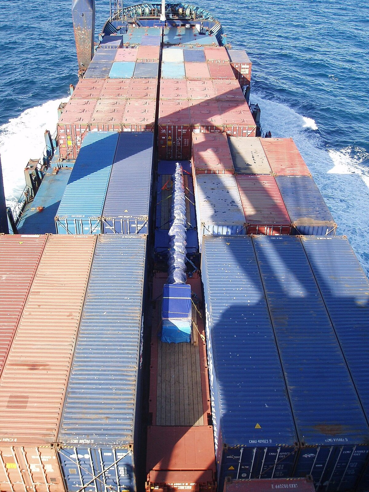

Chapter 15 — Drilling a Well: The Mechanics
Almost every modern well is rotary: four systems—power, hoisting, rotating, circulating—turn geologic plans into a wellbore. If you read time logs, these systems are where hookload, RPM, ROP, WOB, and SPP come from.
Learning goals
- Name the four rotary systems and the main hardware in each.
- Trace mud from tanks through the bit and back to the shaker.
- Explain overbalance vs underbalance and the role of BOPs.
- Connect console gauges to WITSML channels (hookload, WOB, RPM, SPP, ROP).

Tap a numbered pin to explore the figure.
.jpg){kind=link}
Power system
Prime movers are diesels behind the rig (fuel tank nearby). Most horsepower goes to hoisting and circulating; some to rotation, lights, and auxiliaries. Depending on depth: 1, 2, or 4 engines, each ~1,000–3,000 hp.
- Mechanical rig: diesel drives a compound (belts, shafts, gears, chains) to the floor.
- Diesel-electric (newer): diesel turns AC or DC generators; floor motors are electric—more efficient.
Hoisting system
Raises, lowers, and hangs steel in the hole.
- Mast vs derrick: land rigs use a trailer-raised mast (guywires). Offshore builds a vertical derrick. Height ~80–187 ft to rack 2–4 joint stands. Front opening = V-door for pipe ramp.
- Drill floor on a substructure (10–30 ft) that leaves room for wellhead and BOPs.
- Drilling line (~1⅛" wire) on the drawworks; driller controls with the brake. Crown block fixed aloft, traveling block hanging; line reeved 4–12 times; dead end at deadline anchor. Hook hangs under the traveling block.
Weight on the hook = hookload. Set weight on bit → hookload drops → that difference relates to WOB.
Rotating system
Cuts the hole. What turns below is the drillstring.

{kind=link}

Tap a numbered pin to explore the figure.
{kind=link}
- Swivel: hangs from the hook; lets the string rotate without twisting the hose or traveling gear. Mud enters here and goes down the string.
- Kelly: the only square/hex joint the rotary table grips via kelly bushing. Slides down as you drill (~40–54 ft long ≈ ~30 ft of progress before a connection). Table always turns right—left would unscrew joints.
- Drillpipe: lengthens the string—does not cut, does not supply bit weight, does not seal. Jobs: length (~30 ft joints), transmit torque, carry mud inside. Tool joints and upsets thicken ends against failure. Graded and reused until worn out.
- Making a connection: every ~30 ft add a joint below the kelly. Elevators, tongs, slips, mouse hole. Sequence: kelly up → slips → break kelly → make up mouse-hole joint → make up to string → pull slips → drill ahead.
- BHA: drill collars (thick, heavy) put weight on bit and keep pipe from buckling; heavyweight drillpipe transitions stress; subs (stabilizers, shock sub, bit sub, crossover, hole opener, reamer for gauge hole).
- Bits: tricone (steel-tooth or insert/button), diamond, PDC (shear cutters—often the modern default). Typical diameters ~3¾–26"; IADC 3-digit codes; RPM often ~50–100; WOB roughly thousands of psi per inch of bit diameter. Change bit on a trip when noise/ROP say it is worn (stands racked by the derrickman on the monkeyboard).
Circulating system
Path: mud tanks → mud pumps (duplex or triplex “mud hogs”) → mud hose → swivel → down string → bit jets → up annulus → BOP → return line → shale shaker → desander/desilter → tanks. A mud-gas separator on the shaker tank pulls dissolved gas. Reserve pit holds discard mud and cuttings.

Tap a numbered pin to explore the figure.
{kind=link}
Mud types: water-based (fresh + bentonite onshore), oil-based (lubricates, no clay swelling; costly, disposal hard, flammable), emulsion, synthetic-based (oil-based benefits, easier discard—common offshore). Mud up = more bentonite; water back = dilute; weight with barite (or galena). Fresh water ~8.3 ppg; typical bentonite mud ~9–10 ppg; heavy mud ~15–20 ppg. Mud engineer checks Marsh funnel viscosity, gel strength, filter cake/filtrate, pH, solids.
Circulation lifts cuttings, cleans/cools/lubricates the bit, can jet-assist in soft rock—and most critically provides pressure. Pore pressure wants fluid into the hole; mud column wants mud into the rock. Underbalance → influx (kick / blowout risk). Overbalance → filtrate into rock, solids form mud cake that stabilizes walls.
Kelly cock valves stop flow up the string on connections. BOP stack under the floor: blind rams, pipe rams, variable-bore, shear rams (esp. offshore), annular preventer (first close with pipe in hole). Kill and choke lines on drilling spools; accumulator stores hydraulic power. Choke manifold bleeds pressure with BOPs shut and circulates heavier kill mud.
Drilling operations
Rigs run 24 h—three 8-hour tours (or two 12s remote/offshore). Contractor owns the rig; toolpusher is site captain. Operator pays and picks the site; company man represents them. Morning report: depth at 06:00, 24-h footage, time breakdown, consumables, drilling/geo notes.
Driller runs the console: rotary, drawworks, pumps—watching weight indicator (hookload), pump pressure, RPM, torque, strokes, ROP—one hand on the brake for WOB. Console dials are ancestors of the curves in modern drilling displays.
Modern rotary rigs
Typical time split (order of magnitude): ~10% move, 40% drilling, 15% trips, 8% casing/cement, 6% circulate/core, 22% other.

{kind=link}
- Top drive / power swivel: >1,000 hp motor on the hook rotates the string and travels with the block—faster/safer than kelly; connections in stands of 3.
- AC VFD diesel-electric: better torque across RPM, smoother WOB, electric braking.
- Driller in climate cabin with touchscreens/joysticks; iron roughneck for make/break; fine shakers; sometimes closed-loop (no reserve pit).
Key terms
- Drillstring
- Pipe + BHA + bit that drills the wellbore.
- Kelly / top drive
- Surface devices that turn the string.
- BHA
- Bottomhole assembly—collars, stabilizers, bit.
- Annulus
- Space between pipe and hole/casing wall.
- Overbalance
- Mud pressure > pore pressure.
- BOP
- Blowout preventer stack for well control.
- Hookload / WOB
- Hang weight vs weight applied on bit.